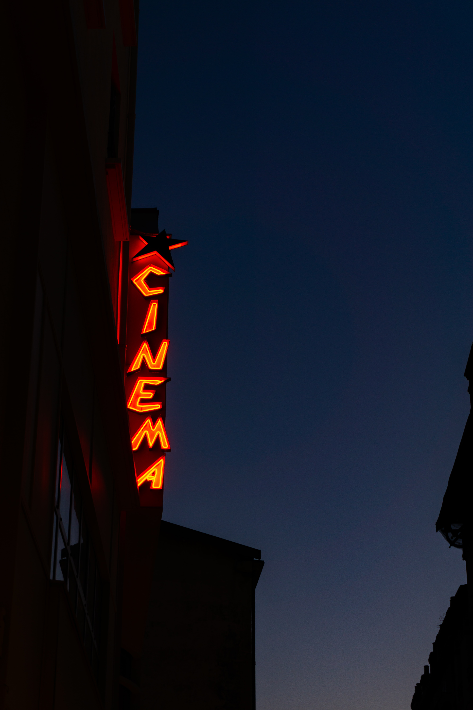

MUSICI like producing, listening, and, yes, analyzing music. I enjoy doing it in my spare time, so the ability to do it full-time would be a dream come true. I can play three instruments if you count my voice, which I consider to be a third instrument. I'll rank my proficiency with each of these instruments below, along with possible heart emojis, where five hearts means I'm really good at it and then everything else goes from there. |
|
| Piano | ❤️❤️❤️ |
| Drums | ❤️❤️❤️❤️❤️ |
| Singing | ❤️❤️❤️❤️ |
When discussing music or using music as a character, the experience may either be incredibly enjoyable or really unpleasant.
It's enjoyable because everyone can do it. Since there are no established musical terminology for describing a piece of music's personality, any description is acceptable—the more inventive, the better!
Not being able to pinpoint the precise term to best describe the music, though, can be irritating. This paragraph only serves as a starting point. Feel free to go further into them.
Energy is in music. It's common to describe compositions as having high energy or low energy. Making music involves controlling the energy that flows through a piece.
Composers frequently discuss developing energy (for instance, toward the work's climax) and releasing energy (i.e. giving the listener a chance to take a breath before launching into the next thing).
As long as they are not too generic or cerebral, emotions are also acceptable ways to describe music. Anger, violence, joy, love, tenderness, irritation, reverence, sleepiness, excitement, anxiety, sentimentality, and nostalgia are some good examples.
I could go on and on about music, but it's time to discuss my other hobby!
Movies |
|  | I love watching movies, TV series, and documentaries; these are my all-time favorites. |
Some of my favorite genres of movies i enjoy are;
Since each film or television series is unique even when it belongs to the same genre, I won't even attempt to rank my favorites in each category. Therefore, because picking a favorite is difficult, I'll just skip it.
Having said that, I find documentaries to be more enjoyable since they include anything or someone who has actually existed and experienced the subject of the documentary. Personally, I tend to be drawn to the real things.
For the Documentaries I might actually have a couple of my favorites, some of them are crazy but since they happened in real life, it makes them more crazy. Some of my favorite documentaries are;